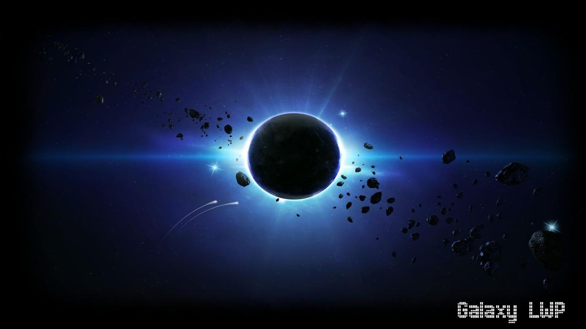

Bueno primero lo primero mi nombre es Isael soy un joven que desea compartir con el mundo su experiencia vivida con los videojuegos, como estos han cambiado mi vida y lo que opino acerca de ellos.
Creci en Mexico y actualmente sigo viviendo aqui, mi primera consola fue una playstation junto con pac-man world juego disfrute mucho junto a mi madre despues de eso me regalaron varios juegos como Megaman X5, Megaman Legends 2, Tarzan, Marvel vs Capcom, Resident Evil 3 (el cual no jugue demasiado ya que me daba mucho miedo Nemesis), etc, juegos que disfrute en su tiempo y aun sigo disfrutando.
Al principio no me llamaba mucho la atencion hacer este tipo de cosas, pero mi tio me propuso la idea de crear mi propia pagina, asi despues de explicarme lo basico empeze la creacion.
Primero tenia que escoger un tema de que iba a hablar en mi pagina, asi que decidi hacerla de lo que mas me gusta, los videojuegos.Con el tema ya puesto ahora tenia que elegir que nombre ponerle entonces elegi uno de los fenomenos que siempre me llamo la atencion, los eclipses, su apariencia y su poca aparicion en los cielos siempre me dio esa sensacion de aura mistica y de curiosidad
Como surgio esta pagina? Parte 2/2
